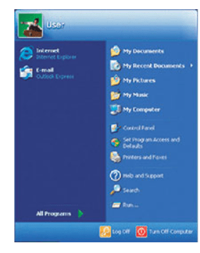
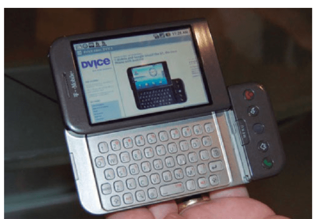

Década de 2000
ERA DA COMPUTAÇÃO MÓVEL:
Os anos 2000 foram dos smartphones, a apple lança o Iphone, o qual salvou a empresa de novo da insolvência, a Android do Google é lançada e ganhou uma enorme fatia no mercado, deixando Apple em segundo e Microsoft em terceiro.
WINDOWS XP (2001):
O Windows XP foi o primeiro sistema que permitia a troca rápida de usuários sem a necessidade de se sair da conta primeiro. Ele também introduziu um sistema que prioriza os elementos no menu Iniciar em função da frequência de seu uso. Nisso, a Microsoft conforme passado os anos, fora atualizando seu sistema, veio o Windows 7, 8, 8.1, 10 e atualmente se encontra no Windows 11.
Menu Iniciar Windows xp
IPHONE 2007
Os telefones celulares já tinham algumas características de smartphones, com possibilidade de acesso a e-mail, editor de textos e outras coisas, mas possuíam telas pequenas que dividiam espaço com teclados difíceis de operar.
A IBM criou pela primeira vez o smartphone 12 anos antes,, com o Simon Personal Communation, porém ele não vingou, e o iPhone de 2007 foi um sucesso. 2008 foi introduzido o modelo 16 GB por 499 dólares, e assim, a Apple foi atualizando seus celulares ano a ano. O 3G foi seguido pelos modelos 3GS em 2009, 4 em 2010, 4S em 2011, 5 em 2012. Em 2014 foi oficialmente declarado que já havia mais celulares no mundo do que pessoas.
Apple obrigou todos os seus concorrentes a inovarem seus celulares, visto que o público amou essa inovação, então para manter a competitividade, todos as outras empresas de celulares, como a Android, Motorola foram introduzindo essas inovações em seus serviços.

Celular Apple 2007
ANDROID
A Google em conjunto com a Android, iria lançar o G1.Porém com o revolucionário iPhone no mercado, teriam que mudar tudo isso. A Google tinha já projetos em andamento com touchscrenn, então não necessitou começar do zero. Eles já imaginavam que no futuro utilizariam telas sensíveis nos celuláres, mas Jobs fez esse futuro vir mais cedo.
Celular G1 que seria lançado pela google e android
O início do século 21 foi marcado pela ampliação do conceito de computadores em smartphones, onde Babbage, Von Neuman nem imaginarium que chegaria a esse ponto, que máquinas minúsculas com capacidades de processamento muitas vezes maiores do que o mainframes e que cabiam no bolso. A com a ampliação da internet, e a globalização, e a facilidade de adquirir computadores e celulares, abriu espaço para inúmeros negócios digitais como, Wikipedia, Skype, Whtasapp, You Tube, Facebook, Waze, Uber. As operações de serviços estavam cada vez mais digitalizadas.